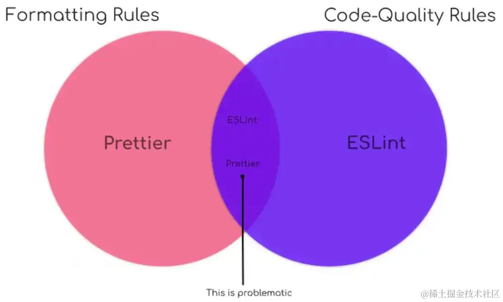

Eslint 和 Prettier 的配置与冲突处理
2024-07-08 16:40:46 · YinHao
前言
统一的前端开发规范，可有助于代码质量提升与团队协作效率提高。通常做法是 eslint 与 prettier 的配合进行实现。
- eslint 中包含三类规则：代码质量检查、代码错误检查、代码风格检查
- prettier 包含：代码风格检查
代码风格部分会冲突，我们会对冲突部分进行处理
Eslint
- 安装
npm i eslint -D
npm init @eslint/config
按照提示完成初始配置，生成.eslintrc.json配置文件
- 使用
- 通过命令的形式修复代码
npx eslint . --fix
- vscode 插件，使得 vscode 调用 eslint 能力，实现实时问题提示，以及保存触发修复
插件安装后，修改 vscode 配置文件 setting.json
{
//...
"editor.formatOnSave": true,
"editor.defaultFormatter": "esbenp.prettier-vscode"
}
Prettier
eslint 的代码格式做的不够彻底，需要 prettier 进行增强。并且 prettier 支持更多的文件格式的格式化。
- 安装
npm i prettier -D
配置.prettierrc.json
- 通过命令的形式修复代码
npx prettier --write.
- vscode 插件，使得 vscode 调用 prettier 能力，实现保存触发修复
插件安装后，修改 vscode 配置文件 setting.json
{
//...
"editor.formatOnSave": true,
"editor.defaultFormatter": "esbenp.prettier-vscode"
}
冲突处理
在进行上述配置后，vscode 中保存后，出现风格规则不一致，eslint 报错问题，现在来解决冲突
- 关掉与 Prettier 产生冲突的 ESlint 格式相关配置
使用eslint-config-prettier这个规则集，关闭 eslint 和 prettier 冲突的规则设置
npm i eslint-config-prettier -D
在.eslintrc.json加入perttier规则集
{
"extends": [
"eslint:recommended",
"plugin:@typescript-eslint/recommended",
"prettier" // 覆盖eslint格式配置,写在最后
]
}
- 不再单独运行 prettier，将 prettier 集成到 eslint 中，作为一项 rule 进行提示与修复
使用eslint-plugin-prettier这个插件
npm i eslint-plugin-prettier -D
在.eslintrc.json加入perttier插件
{
"plugins": ["@typescript-eslint", "prettier"], // 注册插件
"rules": {
"prettier/perttier": "error" // 加入prettier规则
}
}
- 将上面两个步骤合在一起就是下面的配置，也是官方的推荐配置
{
"extends": ["plugin:prettier/recommended"]
}
而plugin:prettier/recommended帮我们做了如下事情：
{
"extends": ["prettier"], // 使用eslinst-config-prettier中的配置项
"plugins": ["prettier"], // 注册该prettier插件
"rules": {
"prettier/prettier": "error", // 在eslint中运行prettier，并启用该插件提供的规则
"arrow-body-style": "off", // 关闭规则
"prefer-arrow-callback": "off" // 关闭规则
}
}
总结
eslint 和 prettier 配置使用需要进行如下操作：
- 首先下载 eslint, prettier, eslint-config-prettier, eslint-plugin-prettier
npm install --save-dev eslint prettier eslint-config-prettier eslint-plugin-prettier
- 项目根目录添加 .eslintrc.js 和 .prettierrc
// .eslintrc.json
{
"extends": ["plugin:prettier/recommended"]
}
// .prettierrc.json
{
"singleQuote": true // 根据需要配置
}
- 补充 ESLint 从 v8.53.0 起，将弃用代码风格相关规则